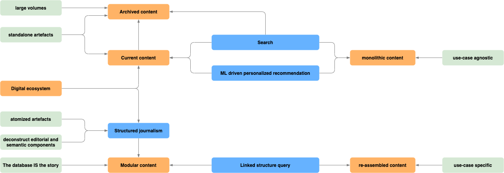

Notes on Modular News
Basic principles 1

Paradigm shift and implications from several perspectives:
static → dynamic
monolithic → atomized
story driven → event driven
semi structured → highly structured
platform centric → use-case centric